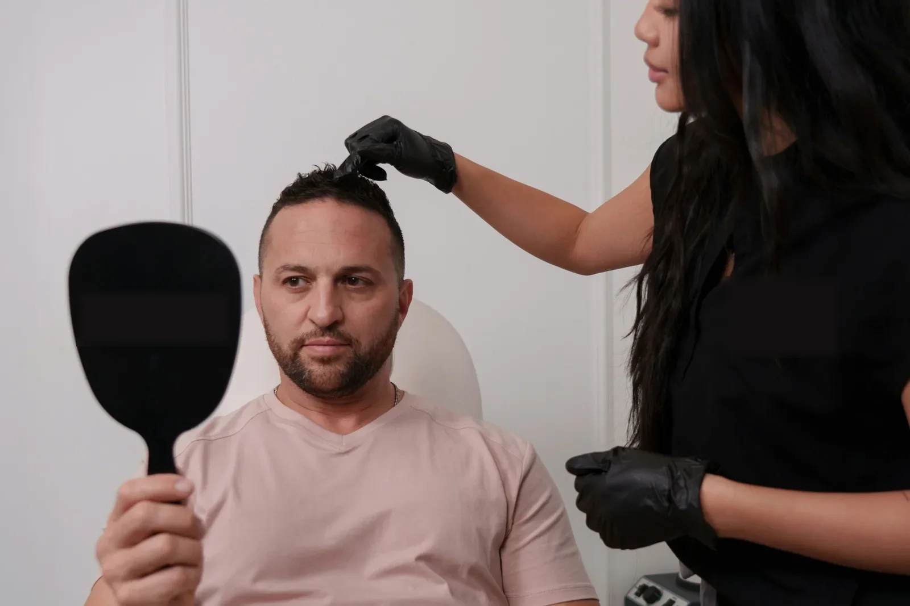
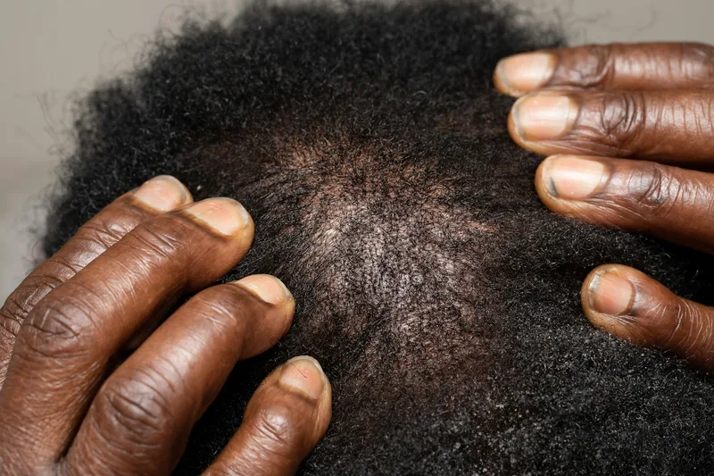
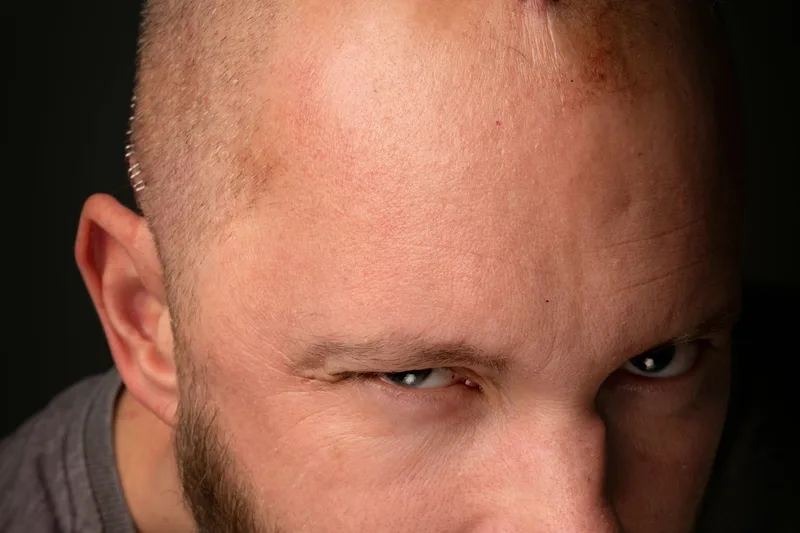
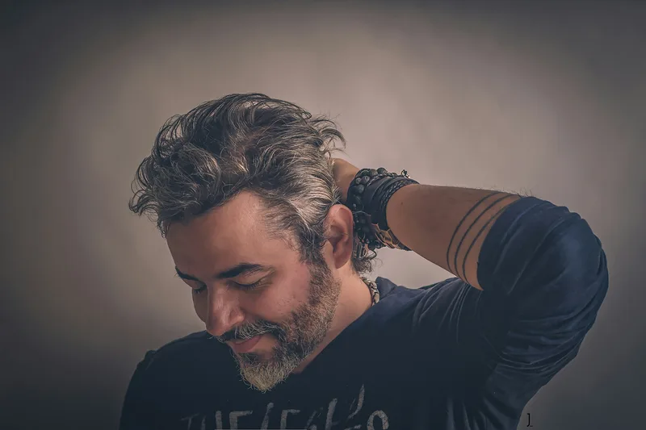
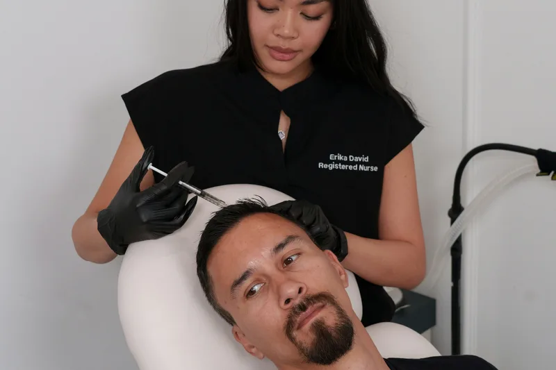

12-month result
Norwood IV hairline restoration
“Dr. Elif Aydan designed a hairline that looks completely native. Sapphire FUE gave me my confidence back.”
- Grafts
- 3,800
- Technique
- Sapphire FUE
- Result
- 12 mo

Every graft extracted and implanted personally by board-certified surgeons. We eliminate commercial delegation to guarantee microscopic precision, natural angulation, and documented 98.4% survival.

Hair transplantation is microsurgery, not a mass-market cosmetic assembly line. When technicians perform channel opening or extraction, graft transection spikes and hairline contours appear artificial.
Our board-certified lead surgeons personally create every recipient incision, determining follicle angle, depth, and density.
Custom V-shaped sapphire blades cause minimal tissue trauma, zero scab adhesion, and accelerate cellular healing by 40%.
The anterior hairline features exclusively single-hair follicular units placed in irregular micro-clusters to mimic nature.
Compare the starting point with the 12-month result to see graft integration, crown closure and natural frontal hairline feathering.

Before surgery
12 months afterIllustrative photography. Individual results vary with donor density, hair calibre and aftercare.
We maintain clinical transparency throughout your transformation, from micro-density mapping to complete 12-month follicular maturation.

Our specialists have dedicated their clinical careers to ethical hair restoration, peer-reviewed graft survival studies, and patient-first medicine.
15+ years microsurgical experience. Pioneer of hypothermic graft preservation and natural frontal hairline feathering geometry.
Specialist in dense-packing mega sessions and corrective secondary hair restoration for previous artificial hairlines.
Oversees atraumatic extraction protocols, graft chilling baths, and microscopic dissection of multi-hair follicular groupings.
Dermatologist and board-certified trichologist specializing in female diffuse hair thinning, scalp diagnostics, and regenerative PRP.
No hidden graft surcharges or day-of-surgery add-ons. Every package includes VIP transfers, five-star hotel lodging, and one full year of aftercare.
Targeted for Norwood stages II through IV requiring up to 3,500 grafts with custom V-channel sapphire incisions.
No pre-made canal incisions. Direct pen placement maximizes crown and hairline density without shaving native hair.
Dual surgeon team collaboration, autologous exosome therapy, continuous doctor monitoring, and 5-star Bosphorus suite.
Read honest reviews from patients who traveled internationally to experience our surgeon-led hair restoration standard.
“Dr. Elif Aydan designed a hairline that looks completely native. Sapphire FUE gave me my confidence back.”
“Zero pain during surgery. The Choi implanter pen made my crown whorl grow back in its natural circular pattern.”
“I was nervous about a high forehead. Dr. Priya and Dr. Elif created a soft, rounded, feminine hairline.”
Submit 3 clear scalp photos. Dr. Elif Aydan or Dr. Marco Feld will calculate graft feasibility and donor density within 24 hours.